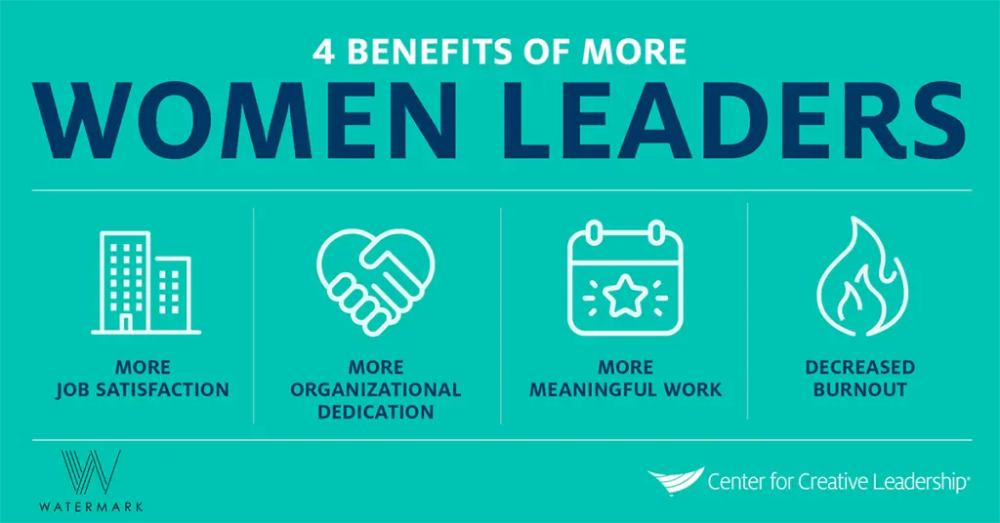
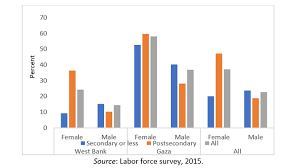

Political/Economic Measures
It is crucial for political and economic measures to be taken to address this issue, as it is not only a matter of social justice but also necessary for building a more inclusive society.
New York
To boost economic growth and create more job opportunities for women, the government can offer financing, training, and mentorship programs for women-owned businesses, along with specialized funds and grants. These economic measures can foster a diverse and inclusive business landscape in New York.
Palestine
A World Bank report released in September 2020 indicated that the unemployment rate among women in Palestine rose to approximately 38%, a figure that far exceeds the unemployment rate among men, which reached about 23% during the same period.
Palestine
Data from the Palestinian Bureau of Economic Analysis indicates that the unemployment rate among women in Palestine is about 42.6%, which is much higher than the unemployment rate among men which is about 18.9%. This rate is increasing in urban sectors and in Gaza in particular, where unemployment rates for women are high.
New York

The government can promote political measures to increase representation of women in leadership positions by implementing policies that encourage diversity and inclusivity in the workplace, including affirmative action programs. Such measures can help address systemic barriers that prevent women from advancing in their careers and create a more diverse and inclusive workforce.